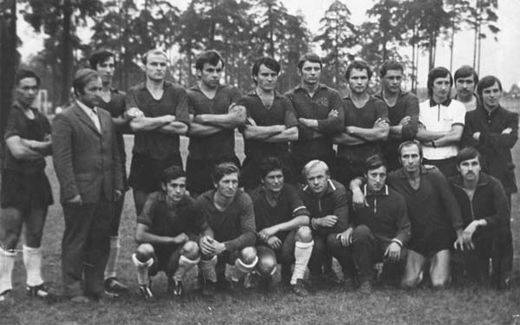
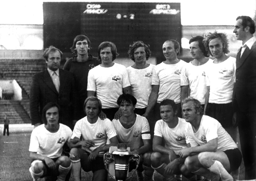
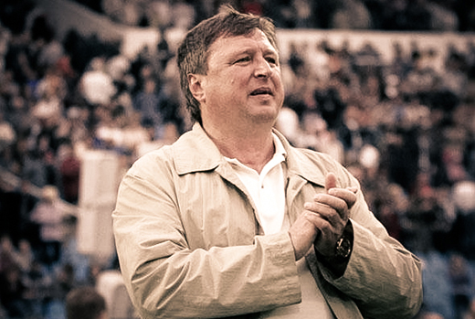
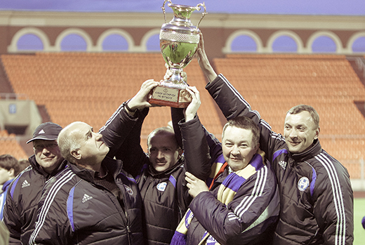
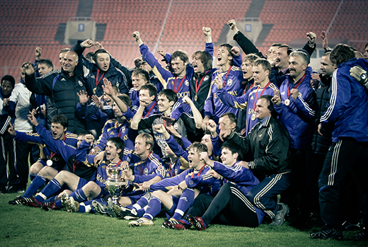

История развития футбола в Борисове
Борисов издавна был футбольным городом. Первое упоминание о "ножном мяче" в городе на Березине датируется 1913 годом. Тогда директор борисовской гимназии П.И.Иванов организовал кружок "Школьный спорт" и на окраине Борисова в живописной местности с помощью учащихся оборудовал футбольное поле, теннисный корт и площадку для игры в крокет. Еще через год в Борисове уже были четыре футбольных команды: "Городская", "Гимназическая", "Первая Новоборисовская" и "Вторая Новоборисовская". Дважды в году в городе разыгрывался "Серебряный Кубок" по футболу, учрежденный "Школьным спортом". В 1922 году состоялось неофициальное первенство республики, в котором участвовали всего четыре команды — Минска, Бобруйска, Борисова и Игумена (ныне Червень). Победителями стали столичные футболисты.
После этого футбол в городе знал немало взлетов и падений. На первенстве БССР борисовчане играли под вывесками сборной Борисова, "Торпедо", "Строителя". Последняя команда в шестидесятых годах прошлого века выглядела неплохо, находилась на видных ролях в первенстве республики. В 1968 "Строитель" считался одним из кандидатов на победу в соревновании, но после первого круга из-за проблем с финансированием команда вынуждена была сняться с соревнований. Следующие четыре года Борисов вообще не был представлен в первенстве БССР. Пока не появился БАТЭ.
1973 — 1984: Эра БАТЭ
Команда под названием БАТЭ, представляющая одноименный борисовский завод, дебютировала в чемпионате республики среди трудовых коллективов в 1973 году. Новую команду взял под свою опеку директор завода БАТЭ Николай Бусел. Она была определена в восточную зону второй группы (Д2). В элиту республиканского футбола БАТЭ вышел сразу же, в 22 встречах проиграв лишь однажды.

В сезоне-1976 борисовчане вернули себе звание сильнейшей команды республики. Причем дружине Льва Мазуркевича удался золотой дубль: капитан БАТЭ Игорь Зайцев поднял над головой еще и Кубок БССР. Победив оршанский "Старт" и волковысский "Труд", в решающем матче земляки не оставили шансов минскому "Буревестнику" (2:0).

Не менее важным вопросом был поиск главного тренера. Неоднократно выезжая в Италию на международные футбольные турниры среди любителей, мы с Виктором Павловцом обзавелись широким кругом знакомых среди специалистов футбола. Одним из них и был Анатолий Боговик. Наша первая мысль — доверить бразды правления командой именно Анатолию Ивановичу. Но тот тактично отказался, сказав, что считает себя детским тренером. Вместе с тем он порекомендовал нам молодого и голодного до побед тренера Юрия Пунтуса. Мы специально отправились в Минск на встречу с Юрием Иосифовичем и довольно быстро нашли точки соприкосновения. А затем организовали знакомство Пунтуса и Капского. После нее стало ясно, что новому клубу в Борисове быть.

Для Юрия Пунтуса идея создания футбольного клуба БАТЭ сразу пришлась по душе.
Потом состоялась встреча с Анатолием Капским. Мы быстро подружились, и дело заспорилось. В сжатые сроки была собрана команда, которая вскоре заехала на первый сбор в Дудинку. Впервые все вместе собрались там 12 апреля 1996 года. Это и есть дата рождения футбольного клуба БАТЭ.

Наверное, футбольного клуба БАТЭ не было, если бы участие в этом проекте не принял Анатолий Капский. Тогда ему исполнилось лишь 30 лет, но его энергии и энтузиазму мог позавидовать любой.
Так БАТЭ спустя 12 лет вернулся на футбольную карту Беларуси. И вскоре, благодаря энтузиазму Анатолия Капского и Юрия Пунтуса, стал на ней весьма заметной точкой.
